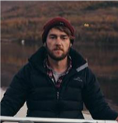
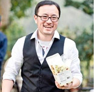
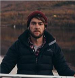
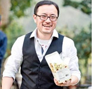

Dr Alana Thomson, Lecturer, Federation Business School
Dr Thomson is a Lecturer in Management in the Federation Business School, Brisbane campus. Alana’s research, which has been published in ABDC A-ranked journals, has looked at the connections between sport and communities, particularly securing positive legacy outcomes from large-scale sport events. Alana has worked and researched with a range of user groups in sport, including Aboriginal and Torres Strait Island peoples, Pacific Island communities, Chinese communities, Masters athletes and women in sport. Alana was a postdoctoral research fellow at Griffith University from 2016-2020 and worked on a number of research projects across areas of sport and events, including an International Olympic Committee-funded grant examining social legacies of Summer Olympic Games over the last 2 decades. Alongside her research career, Alana has professional experience as a policy writer working on the Gold Coast 2018 Commonwealth Games and practitioner in the sport and sport event sector.
Mr Josh Ambrosy, Lecturer, Federation University School of Education
Josh’s previous research has focused on alternative education practices and settings. This includes areas such as year nine programs and outdoor education in Victorian schools. Through this research Josh has developed skills in using both arts-based methodologies along with mixed methods surveys. Josh has extensive knowledge of outdoor, sport and recreation policy through a number of professional roles.
Dr Abdel K Halabi, Senior Lecturer, Federation Business School
Dr Abdel K Halabi is a senior lecturer in Accounting at the Federation Business School. Abdel is a Fellow of the Chartered Accountants of Australia and New Zealand (CAANZ) and a Certified Practising Accountant with CPA Australia. Abdel is the current Chair of CPA Australia’s Gippsland Regional Branch, and a member of CPA Australia’s Victorian Divisional Council. Abdel’s research interest is in Accounting Education, Accounting History and Accounting for sporting clubs. In terms of sports related research, Abdel’s work has been published in Accounting History, Journal of Management History, Business History. Australian Economic History Review, The International Journal of the History of Sport, and The Journal of Sport Management. Abdel is the current co-editor of “Sporting Traditions” the journal of the Australian Society for Sports History.
Dr Vaughan Reimers, Senior Lecturer, Federation Business School
Vaughan has worked as a full-time academic with Monash University and then Federation University Australia for 23 years. His expertise lies in the field of marketing and he has an extensive list of publications and research grants. Vaughan is regularly employed/engaged by external stakeholders to help 'translate' complex academic concepts and content into a 'language' that practitioners can understand and implement. Vaughan also has significant expertise and extensive experience in conducting studies that focus on stakeholder needs, studies requiring large samples, survey design, sample selection and research software such as Survey Monkey. Vaughan was a key team member of the project; Development of the Evaluation framework for Latrobe with particular interest in the work with the Gippsland Primary Health Network.
Dr Bryce Magnuson, Lecturer, Federation Business School
Dr Bryce Magnuson is a Marketing Lecturer in the School of Business at Federation University, a position he has filled on a full-time basis since 2018. Prior to this appointment he worked as a sessional academic at the Gippsland Campus for Federation University from 2014-2017, and the former Monash Gippsland Campus from 2012-2014. During this time Bryce also worked overseas at partner universities in Hong Kong and China. He is currently based at the Berwick Campus but regularly works at the Gippsland Campus. His research areas of interest include ethical fashion, sustainability in marketing, and consumer behaviour among others. Bryce is passionate about teaching and creating engaging teaching environments and has made a number of connections with a variety of stakeholder groups in Gippsland and Berwick through his involvement with initiatives such as the Casey Cardinia Business Awards.
Dr Millicent Kennelly, Senior Lecturer, Griffith Business School
Dr Kennelly is a Senior Lecturer in the Department of Tourism, Sport and Hotel Management at Griffith University in Queensland. Dr Kennelly’s research focuses on sport event management and stakeholder experiences, with a particular focus on leveraging events to achieve positive social and economic legacies for hosting communities. Dr Kennelly has worked with Dr Thomson on several projects examining sport event outcomes, including a project funded by the International Olympic Committee. Dr Kennelly has also previously examined stakeholder perspectives of risk management, contingency planning and service recovery in the context of sport events. Dr Kennelly’s work has been published in a range of ABDC A-ranked publications and she currently serves on the Editorial Boards for the Journal of Sport and Tourism, Annals of Leisure Research and Leisure Studies
Dr Richard Shipway, Senior Principal Academic, Bournemouth University (UK)
Dr Shipway’s research interests focus on the impacts and legacies of international sport events, crisis and disaster management at sports events, volunteering at sports mega events, sport tourism, Olympic studies, and sport ethnography. His work has explored a series of Olympic related research themes ranging from resident perception community studies to Olympic tourism. Richard's other research interests are linked to the experiences of endurance athletes, most notably distance runners and cycling tourists. He has previously received a major research grant from the Economic and Social Research Council (ESRC) to develop research linked to sport tourism and sports events. Richard is currently a visiting scholar at the University of Queensland, and since 2010 he has served on the ESRC's Peer Review College (PRC), refereeing grant proposals within social sciences.
Dr Fred Chao, Senior Lecturer, Newcastle Business School
Dr Chao is a Senior Lecturer in Marketing at the Newcastle Business School. Prior to joining the University of Newcastle, Fred was an assistant lecturer at the Department of Marketing at Monash University, Melbourne. Fred’s research interests focus on the areas of consumer behaviour, new product development, product innovation management and marketing research. Fred’s publications appear in the Australasian Marketing Journal. He has been a reviewer for Asia Pacific Journal of Marketing and Logistics and European Journal of Marketing. Fred’s research interest is primarily focused on understanding the influence of consumer innovativeness on new product adoption across various product categories, services and cultures. The importance of such research enables companies addressing innovative consumers and knowing how to deal with this key segment, thus minimizes the failure rate of product innovations. He is currently engaged in a cross cultural study about drivers of consumer acceptance of novel new services.
Dr David Fechner, Postdoctoral Research Fellow, University of Queensland
Dr Fechner’s research examines how sport event stakeholders such as event managers, sponsors, and participants can collaborate to create meaningful experiences for event participants. David has experience in mixed method research including conducting and analysing interviews as well as advanced statistical analysis. David’s work has been published in ABDC A-ranked journals.
 


